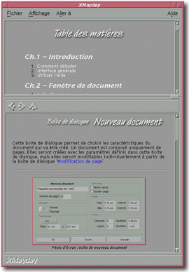
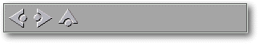

<!-- Documentation XMayday (c)1996-2000 AXENE contact axene@axene.org>
<HTML>
<HEAD>
<TITLE>Interface g&eacute;n&eacute;rale</TITLE>
</HEAD>

<BODY BGCOLOR=#FFFFFF BACKGROUND="Images/back.gif" TEXT=#000000>
<P ALIGN=right>

<P>
<BR>
<BR>
L'interface g&eacute;n&eacute;rale correspond &agrave; la fen&ecirc;tre
principale d'XMayday. Lorsque l'on ouvre plusieurs fen&ecirc;tres
XMayday gr&acirc;ce &agrave; l'entr&eacute;e '<A HREF="Menu_Bar.html#file">Fichier</A>
/ <A HREF="Menu_Bar.html#new_menu_entry">Nouvelle fen&ecirc;tre</A>',
chaque fen&ecirc;tre poss&egrave;de la m&ecirc;me interface g&eacute;n&eacute;rale.
<BR>
<BR>
<HR>
<BR>
<CENTER>

<BR>
<I><SMALL>
Photo d'&eacute;cran&nbsp;: Interface g&eacute;n&eacute;rale.
</I></SMALL>
</CENTER><P>
<BR>
<HR>
<BR>
<P>
<H3>L'interface g&eacute;n&eacute;rale d'XMayday
est compos&eacute;e des &eacute;l&eacute;ments suivants&nbsp;:</H3>
<UL>
  <LI><A NAME="menu_bar"><A HREF="Menu_Bar.html">la barre de menus</A>.
     </A><P>
  <LI><A NAME="index_section">la section d'index. Cette section
     permet de <B>visualiser la page d'index d'une documentation</B>. Il
     est possible que cette section soit masqu&eacute;e, soit parce
     qu'aucune page d'index n'a &eacute;t&eacute; choisie, soit parce
     qu'elle est cach&eacute;e gr&acirc;ce &agrave; l'entr&eacute;e
     de menu '<A HREF="Menu_Bar.html#file">Fichier</A> /
     <A HREF="Menu_Bar.html#view_index_menu_entry">Cacher Index</A>'.
     Cliquer sur un lien hypertexte
     de la page d'index fait changer la page html de navigation. Lorsque
     l'index est affich&eacute;, un bouton rectangulaire en bas &agrave;
     droite de la section permet de redimensionner verticalement la
     section d'index.
     </A><P> 
  <LI><A NAME="browse_section">la partie navigation.
     Cette section permet de <B>visualiser la page demand&eacute;e
     de la documentation</B>.
     Toutes les pages successivement visualis&eacute;es dans cette
     section sont gard&eacute;es dans l'historique de la fen&ecirc;tre
     XMayday courante.</A><P>
     <CENTER></CENTER>
     <P>
     La barre d'ic&ocirc;ne permet d'acc&eacute;der aux
     pages html de l'historique.
     Les trois ic&ocirc;nes ont les fonctions suivantes&nbsp;:
     <UL>
       <LI> <A NAME="icon_prev">le premier
	  bouton ic&ocirc;ne permet d'<B>acc&eacute;der &agrave; la page
	  pr&eacute;c&eacute;dente de l'historique</B>. La page pr&eacute;c&eacute;dente
	  est la page lue et affich&eacute;e juste avant la page de navigation
	  courante.
	  </A> 
       <LI> <A NAME="icon_next">le deuxi&egrave;me
	  bouton ic&ocirc;ne permet d'<B>acc&eacute;der &agrave; la page
	  suivante de l'historique</B>. La page suivante est la page lue
	  et affich&eacute;e juste apr&egrave;s la page de navigation courante.
	  </A>
       <LI> <A NAME="icon_home">le dernier
	  bouton ic&ocirc;ne permet d'<B>acc&eacute;der &agrave; la premi&egrave;re
	  page gard&eacute;e dans l'historique</B>.
	  </A><P>
     </UL>

  <LI><A NAME="bottom_bar">la barre horizontale d'information.
     Elle <B>affiche une aide concise sur l'usage des boutons
     ic&ocirc;nes</B> lorsque le pointeur souris est au-dessus de l'un
     d'eux. Si le pointeur souris est positionn&eacute; sur un lien,
     la barre affiche le <B>nom de la page</B> point&eacute;e par ce lien.
     </A><P>
</UL>
<BR>
<HR>
<P ALIGN=right>
<P>
</BODY>
</HTML>


